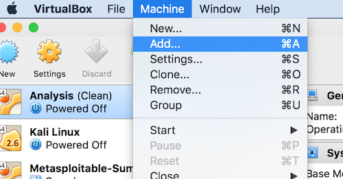
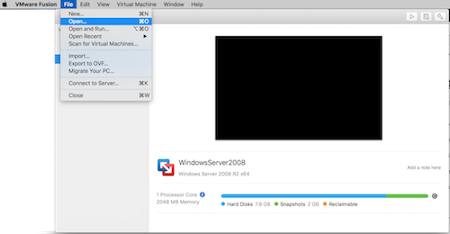

Throughout this course, you should do most of your work on a virtual machine. A virtual machine (VM) is a software computer that, like a physical computer, runs an operating system and applications. Say that your laptop runs macOS, you can run a version of Windows as a virtual machine (the "guest") on top of macOS (the "host"). The value of using a virtual machine is logically separation between machines. Theoretically, a virtual machine is isolated from the host. That is, mistakes made on a guest (e.g., malware) will not escape to host --with a few exceptions including file sharing between host and virtual machine. To run a virtual machine, you will need a hypervisor, also known as a Virtual Machine Manager (VMM). Hypervisors also provide a very handy feature: taking snapshots of running virtual machine, and rolling back to a snapshot when necessary (i.e., when mistakes are made).
1. Download a hypervisor software. Options:
Other hypervisor software options include Parallels for macOS (commercial), and QEMU (free and open source).
2. Download a premade 64-bit Kali Linux VM from http://www.cs.tufts.edu/comp/116/KaliVM.zip (1.52 GB; SHA256(KaliVM.zip)= 775dc03c6dd403686b1aad63072c076b780a5a102521313a3497def4f5d1404d). You will need to unzip the package. This virtual machine can be used on either VirtualBox or VMware Fusion / Workstation. This VM has Kali Linux installed as well as the tools that you will be using for this class (e.g., Wireshark, nmap, ettercap, etc). Files and actions done inside the VM will stay persistent inside of the VM unlike the live ISO option where everything is saved to RAM. Username is root (so yes, superuser or admin). Password is toor.
Important note: the premade Kali VM does NOT have open-vm-tools-desktop or VirtualBox Guest Additions preinstalled so you can drag-and-drop files between your VM (guest) and your host (main computer) or share clipboard, cut-and-paste between guest and host.
3. Unzip the contents of the KaliVM.zip file.
3A. If you are using VirtualBox, open the VM via Go to Machine > Add and find the Kali Linux.vbox file that is in the unzipped folder. 
3B. If you are using VMware Fusion or Workstation, open the VM via File > Open and open highlighted file in the unzipped folder. 
4. Make sure that networking (i.e., Internet access) is available on your host. Turn on the virtual machine.
5. Play around with the environment.
6. Install the VM tools in the Kali VM for your respective hypervisor so you can drag-and-drop files between your VM (guest) and your host (main computer) or share clipboard, cut-and-paste between guest and host.
apt-get update ; apt-get install -y virtualbox-guest-x11, then reboot the VM (source: https://docs.kali.org/general-use/kali-linux-virtual-box-guest)open-vm-tools via: apt-get update ; apt-get install -y open-vm-tools-desktop fuse, then reboot the VM (source: https://docs.kali.org/general-use/install-vmware-tools-kali-guest)The problem: you receive the following error in VMware or something similar in VirtualBox: Binary translation is incompatible with long mode on this platform. Long mode will be disabled in this virtual environment and applications requiring long mode will not function properly as a result. See http://vmware.com/info?id=152 for more details. or This virtual machine is configured for 64-bit guest operating systems. However, 64-bit operation is not possible. or This host supports Intel VT-x, but Intel VT-x is disabled.
The solution: You have to enable virtualization on your computer's BIOS.
tl;dr Searching for "enable virtualization on [insert your computer model here]" can be very helpful because the steps are often different for different computer models. It will likely involve turning off the computer, turning it on while holding a key (e.g. the escape key), and then switching a menu item.
On many machines, how you get into your computer's BIOS is this:
On newer machines and Windows 10, the process may be different: http://www.dell.com/support/article/us/en/19/sln143038/access-uefi--bios--system-setup-from-windows-on-your-dell-system
dist-upgradetsharkdist-upgrade)python-pcapy